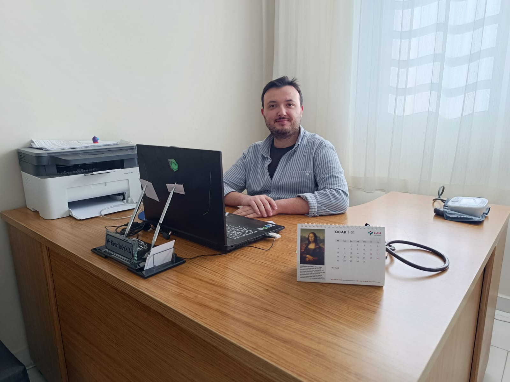
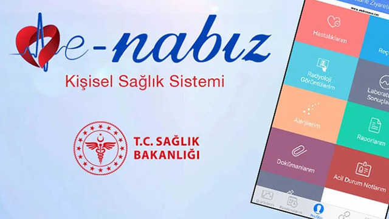

AHB Birimleri
54 Nolu AHB
- Aile Hekimi: Dr. BURAK YASİR ÇALLI
- Sağlık Personeli: ÖZLEM ÇIBIKOĞLU
55 Nolu AHB
- Aile Hekimi: Dr. CEYDA UZUNOĞLU ALTAN
- Sağlık Personeli: EMİNE ASLAN
Ortak Çalışanlar
- Yardımcı Çalışanlar: AKİLE URSAVAŞ, SİBEL YAZICI
e-Nabız Girişi
Hava Durumu
 --°C
--°C